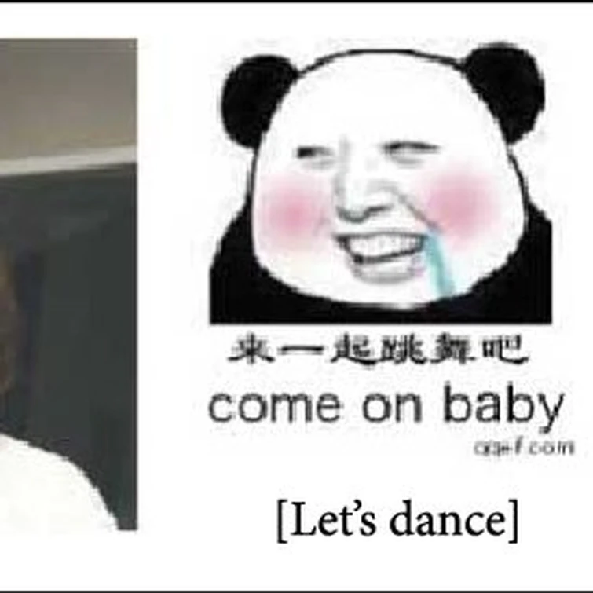

Some placeholder content for the collapse component. This panel is hidden by default but revealed when the user activates the relevant trigger.
- An item
- A second item
- A third item
- A fourth item
- And a fifth one
Modal title
Épicas batallas de rap del Frikismo
Yuno
Contra
¡Lucy!
¡Vamos!
… Muy buenas, ¿qué hay?
Aquí está Yuno Gasai
Asesino a miles literalmente y en el freestyle
Cojo el mic y seguro que te sorprenderás
Con mi rap puedes llamarme, Mirai Nicki Minaj (Oh yeah)
… En tu anime siempre intentan mostrarte sin camiseta
Te sexualizan y te reducen a un par de tetas
¿Tú me retas?, ¿sabiendo qué soy peligrosa y macabra?
Ya lo entiendo
Tienes cuernos porque estas como una cabra
… Yo fui Dios
Contra mi habilidad no puedes tú
Pasaste tu vida recluida como Mew Two
Matas enemigos a distancia, estilo Bluetooth
Pero no puedes conmigo, estúpida diclonius
… ¿Nyu?, nyu, nyu, nyu, nyu
Nyu, nyu, nyu, nyu, nyu, nyu, nyu
Ajam
Vale, mejor me pongo seria
… ¿Vas de subidita?
Yo soy la número uno
Y ahora todos van a ver como me desayuno a Yuno
Niñata chillona, tu tono de voz me espanta
Sí hablases más agudo, tan solo te oiría Wanta
… Y es cierto, reviento cuerpos a golpe de vector
Los dejo a todos muertos y con el vientre abierto
Perfecto es mi don y tú a mí no me haces nada
Mejor véte ya a la cama o te dejaré como a Nana
… Drogaste y encerraste a Yuki en abandonado hotel
Paseándote en bragas mientras le obligabas a comer
Maldita mujer, estás loca y es así
No me extraña que hasta tu novio tenga miedo de tí
… Tonterías, Yuki es muy feliz conmigo ¿a qué si, mi amor?
Claro, cielo
Pero no mates a nadie, por favor
Dile a Lucy, que no soy tan mala
Bueno, al menos tu no has hecho estallar en mi familia en mi puta cara
… Muy bien dicho, por tus celos volviste a ser asesina
Te quedaste sola y virgen mientras Kota se tira a su prima
No pudiste salvar ni a Aiko
Eres tan patética
No eres tan fuerte si te apalizó una parapléjica
… Sí yo fuera tú, mi vida me daría asco
Rezaría porque el tiro hubiera perforado el casco
Cojo una katana y te corto cual sushi
Eres tan tonta que te llamaremos:
¡Australopitecus Lucy!
… Tanto esfuerzo por vencerme, muy inútil es
En mis manos vuestro esqueleto será dúctil
Quien combate conmigo, termina en la UCI, ¿ves?
Por eso soy conocida como Lucy-fer
… Vuestra relación se tambalea, lo diré bien claro
Creo que Yuki disfrutó con el beso de Akise Aru
Y ahora os voy a destripar y os dejaré frios como témpanos
Creedme, ya tengo experiencia asesinando huérfanos
… Inténtalo, Yuno, mas no podrás escaparte
Esta vez no tienes a Muru Muru para ayudarte
Voy a darte caza a ti a tu novio idiota también
Vuestros diarios predicen que yo os brindaré el Dead End
… Con que esas tenemos, eh
Te voy a enseñar
¡Cállate Yuki, esta es mi batalla!
Vale, vale, vale cariño, lo siento, ya me voy
… Has vivido siendo una okupa de mierda
Mientras sembrabas el caos y armabas bulla
Destruiste la vida del doctor Kurama
Y ahora seré yo quien destruya la tuya
… Kaede cae de bruces ante mí
Yo he venido aquí, para causar tu fin
Y tras acabar con tu vida
Tendré otro cadáver más enterrado en mi jardín
… Tengo una idea
Convocaré a Deus para poder participar en su juego
Me cargaré a todos con un solo dedo
Y después crearé otro mundo de cero
… Donde tus dos padres aún no se hayan muerto
Para así buscarlos y decirles luego
Coged a la criminal de vuestra hija
Y meted a esa escoria entre rejas de nuevo
… ¿Quién gana?
¿Quién sigue?
Tú decides
Épicas batallas de Rap del Frikismo